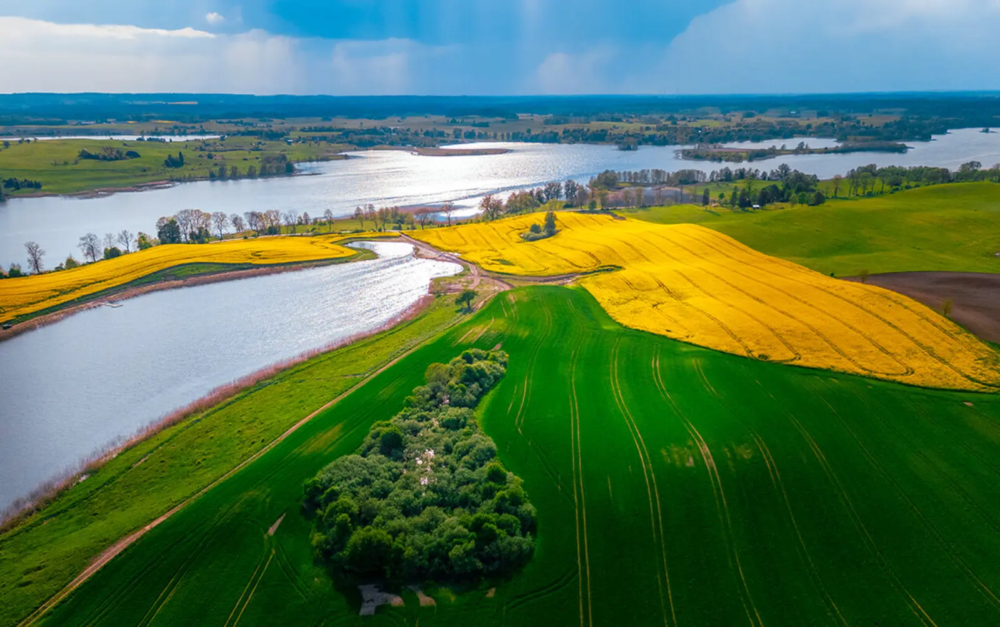

Rural Gothic churches, Warmian red-brick cottages, and roadside shrines. A region where the village meets history. Slow travel through Warmian villages.
Why Warmian villages, differently
Warmia is a region where the village meets history in the most direct way. Rural Gothic churches — often built in the 14th and 15th centuries — are today among the most valuable architectural monuments in Poland. Villages like Frombork, Braniewo, Pieniężno have churches that remember the Teutonic times. This is one of the few places in Poland where in a single village you can see a Gothic church, a Warmian brick cottage, and a roadside shrine in one landscape.
Slow travel through Warmian villages is a journey through history and culture. Instead of rushing from village to village, stop in one longer — talk to residents, enter the church, see a brick cottage, listen to how the village lives. Each village has its own history, its own churches, its own inhabitants. This is a journey that rewards those who slow down — the longer you are in one place, the more you can truly understand about Warmian culture.
What to see
Warmian villages split into several groups: villages with Gothic churches (Frombork, Braniewo, Pieniężno), villages with red-brick cottages (around Olsztyn), villages with roadside shrines (whole region), villages around Frombork. Exploring the region takes 2–3 days.
Villages with Gothic churches
- Frombork — a small town with a Gothic cathedral on a hill, one of the most important places in the region. In the surrounding villages, Gothic churches have survived, including the church in Bogdany.
- Bogdany village — a Gothic church from the 14th century, one of the most valuable architectural monuments in the region.
- Braniewo — a town with a Gothic church, one of the oldest in the region. In the surrounding villages, wooden churches have also survived.
- Pieniężno — a small town with a Gothic church and monastery, one of the most important in the region.
- Chruściel village — a Gothic church from the 14th century, less known but worth attention.
Villages with red-brick cottages
- Warmian red-brick cottages — a characteristic element of the region's landscape. Brick houses, often with high roofs and ornate gables, distinguish Warmia from other regions of Poland.
- Brąswałd village — a village with red-brick cottages, one of the oldest in the region.
- Klebark Wielki village — a village with red-brick cottages and a Gothic church.
- Jonkowo village — a village with red-brick cottages and a wooden church.
Shrines and villages around Frombork
- Roadside shrines — an inseparable element of the Warmian landscape. Brick, with figures of saints, often in picturesque spots.
- Święty Kamień village — a village with a shrine and a stone, connected with a legend.
- Milejewo village — a village with a shrine and a wooden church, less known but worth attention.
- Nowica village — a village with a shrine and agricultural tradition, one of the more interesting places around Frombork.
When to go
- May and June — the best time for slow travel. Fewer tourists, long days, stable weather. Worth a walk around the villages.
- July–September — season for festivals and fairs. Worth it for cultural events.
- September–October — second best. Autumn colours, fewer people. September is a good time for mushroom picking in Warmian forests.
- November–March — villages in winter are less accessible (some churches closed). Worth it for those who want to see the villages without crowds.
Getting there
- By car: ~1.5 hours from Olsztyn (DK51), ~2 hours from Gdańsk (S7 and DK51), ~3.5 hours from Warsaw (S8 and DK16).
- By train: Olsztyn, Braniewo, Frombork have railway stations, with connections from most Polish cities. Then rent a car or bike.
- By bus: PKS and private operators serve most villages.
Warmian villages are best explored by car or bike — they are scattered over a large area, and public transport between them can be sparse. Plan the route to connect 3–4 villages in one day.
How much time you need
A weekend (2 days) is the minimum — Frombork, Braniewo, Pieniężno and surroundings.
Three days is realistic for a first visit. Frombork, Braniewo, Pieniężno, villages with red-brick cottages.
A week lets you explore all Warmian villages — from Frombork to Olsztyn, with numerous stops.
What to eat and where to sleep
- Smoked vendace — a delicate fish from Warmian lakes, available at smokehouses.
- Olsztyn marzipan — the sweet icon of the region, available at pastry shops in Olsztyn.
- Kindziuk — a cold cut from game, available in local shops.
- Duck with apples — a Warmian classic, available in elegant restaurants.
- Beer from local breweries — several craft breweries in the region.
- Local products — cheeses, honey, cold cuts, available in regional shops.
Accommodation: Olsztyn (town, more options), Frombork (small town, smaller choice), Braniewo (town, smaller choice), Pieniężno (small town, smaller choice), agritourism farms in villages (quiet, home-cooked food).
Practical tips
- Guided tours — the history of Warmian villages is complex, and without context many sites look similar. Take a guide at selected places.
- Services — in churches during services, keep quiet and do not photograph.
- Opening hours — many churches are open only in season (May–October) and only on selected days. Check hours before your trip.
- Bookings — visiting some churches requires an advance appointment. Call or email.
- Weather — weather in the region can be changeable. Even in July, bring a rain jacket.
- Signal — good in towns, weaker in villages. Have an offline map.